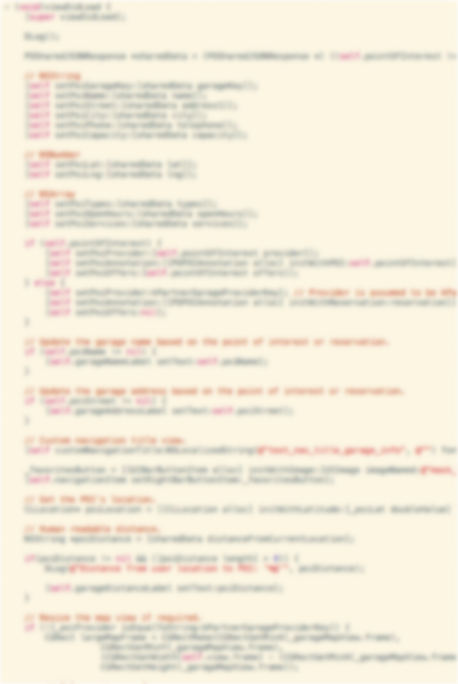

Me
Brent Westmoreland
Group
Emerging Technology Engineer
CocoaHead
Coffee Snob
@bwestmoreland
Intro to Testing
Focus
There's a lot of vocabulary in testing. This presentation will focus strictly on Unit Testing in the Cocoa frameworks.
Intro to Testing
So What is Unit Testing?
- Should define the behavior of a class or unit of execution.
- Should be fast
- Should not have implementation dependencies. (Network, DB, etc.)
- Should be atomic
Intro to Testing
How do tests define behavior?
Assertions, Expectations, & Shoulds
STAssertNil(a1, description, ...)STAssertNotNil(a1, description, ...) STAssertTrue(expression, description, ...)STAssertFalse(expression, description, ...)STAssertEqualObjects(a1, a2, description, ...)STAssertEquals(a1, a2, description, ...)Depending on your chosen Framework, you will be asserting or expecting specific results of the test expressions you write. (We'll get more into these shortly.)
Intro to Testing
Unit tests should be fast.
How fast?
< 1 second per test.
Intro to Testing
How does one avoid implementation dependencies?
Test Doubles...
- Mocks
- & Stubs
- & Fakes
- Oh My!
Intro to Testing
So my tests have to be ATOMIC?
Intro to Testing
ATOMIC? SRSLY?
Atomic like properties, not like bombs. Your tests should be independent and capable of being run without stepping on one another. There should not be deep dependencies between tests.
Testing Workflows
Testing Workflows
So I just code the same way and then write tests now, right?

Testing Workflows
Test Driven Development
- Red
- Green
- Refactor
TDD Basic Workflow
Three main components
- Red
- (void)testWindowIsKeyAfterApplicationLaunch { [appDelegate application: nil didFinishLaunchingWithOptions: nil]; STAssertTrue(window.keyWindow, @"App delegate's window should be key"); } - Green
- (BOOL)application:(UIApplication *)application didFinishLaunchingWithOptions: // { self.window = [[UIWindow alloc] initWithFrame:[[UIScreen mainScreen] bounds]]]; [self.window makeKeyAndVisible]; return YES; }
TDD Basic Workflow
- (BOOL)application:(UIApplication *)application didFinishLaunchingWithOptions: //
{
[self.window makeKeyAndVisible];
return YES;
}
- (UIWindow *)window
{
if (!_window){
_window = [[UIWindow alloc] initWithFrame:[[UIScreen mainScreen] bounds]];
}
return _window;
}
Testing Frameworks
Testing Frameworks
Create a Test Target
Testing Frameworks
You now have a test target
Testing Frameworks
There are many, and they each have their strengths
- Currently the Default
- jUnit style syntax
- Easy to debug
Testing Frameworks
There are many, and they each have their strengths
- Soon to be the Default
- Easy to debug
- Can test from the command line
- Can test UIKit
- Same ugly syntax
- Very little public info so far, but if you know OCUnit you should be ok
Testing Frameworks
There are many, and they each have their strengths
- Awesome RSPEC style syntax
- Powerful expectations out of the box
- Block based
- Hard as hell to debug
- Some effort to install and configure
Testing Frameworks
There are many, and they each have their strengths
- OCMock
- OCHamrest
- OCMockito
- Expecta
STOP TALKING AND DEMO!
Further Reading
Web
Even Further Reading
Books
- Test Driving iOS Development with Kiwi - Daniel Steinberg.
- Test Driven iOS Development - Graham Lee
- Clean Code - Robert C. Martin
Watching
Videos
- Unit Testing iOS Applications with Xcode 4 - Robert Lisle.
- Unit Testing With XCode - Graham Lee